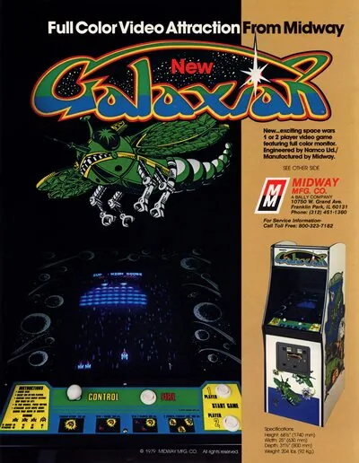

FBA (FinalBurn Alpha)
Galaxian
- Año: 1979
- Desarrollador: Namco
- Género: Disparos / Galería de tiro
- Jugadores: 2 jugadores
ARGUMENTO
Galaxian expandió la fórmula creada por el Space Invaders. Al igual que ese juego, Galaxian presentaba una horda de alienígenas atacando que intercambiaban disparos con el jugador, pero, a diferencia del Space Invaders, Galaxian añadía un elemento dramático al tener a los marcianos atacando al estilo kamikaze a la nave controlada por el jugador.
El juego es bastante simple. Enjambre tras enjambre de aliens ataca a la nave controlada por el jugador (llamada Galaxip), la cual solo puede moverse de izquierda a derecha en la parte inferior de la pantalla. La nave solo puede lanzar un disparo por vez (al igual que en el Space Invaders), recargándose cuando un alien es destruido o cuando el disparo desaparece de la pantalla, pero los disparos muchas veces son rápidos y la nave se recarga rápidamente. El jugador destruye un enjambre, solo para encontrarse con otro más agresivo que el anterior. Un fondo plano y repetitivo con estrellas se mueve detrás de la acción, presentando un colorido efecto.
Galaxian fue un éxito enorme para Namco. Fue, además, el primero en presentar el 100 por ciento de sus gráficos con color RGB verdadero.
CUADRO DE PUNTUACIONES
Alien azul en formación: 30 puntos Alien azul atacando: 60 puntos Alien púrpura en formación: 40 puntos Alien púrpura atacando: 80 puntos Alien rojo en formación: 50 puntos Alien rojo atacando: 100 puntos Alien mayor en formación: 60 puntos Alien mayor atacando sin acompañantes: 150 puntos Alien mayor atacando con un acompañante destruido antes que el acompañante: 150 puntos Alien mayor atacando con un acompañante destruido después que el acompañante: 200 puntos Alien mayor atacando con dos acompañantes destruido antes que los acompañantes: 300 puntos Alien mayor atacando con dos acompañantes destruido después que los acompañantes: 800 puntos
Controles
Un botón.
| Panel | Juego |
|---|---|
 | Disparar |
  | Empezar |
 | Meter una moneda |
+  | Salir del juego |
El panel en FBA (FinalBurn Alpha)

Longplay

Partida completa de la recreativa (14 min), de hirudov: Arcade Longplay - Galaxian.